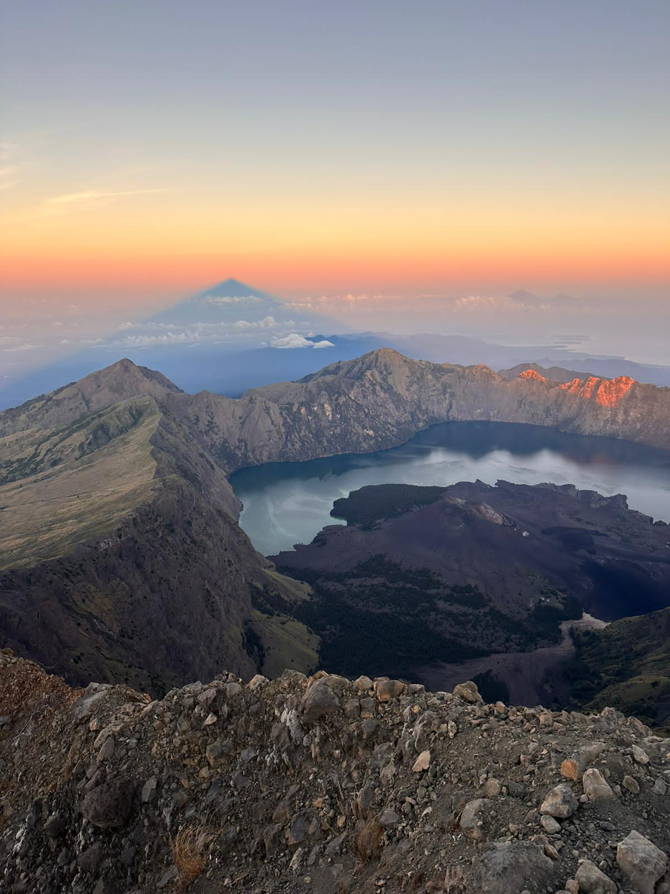
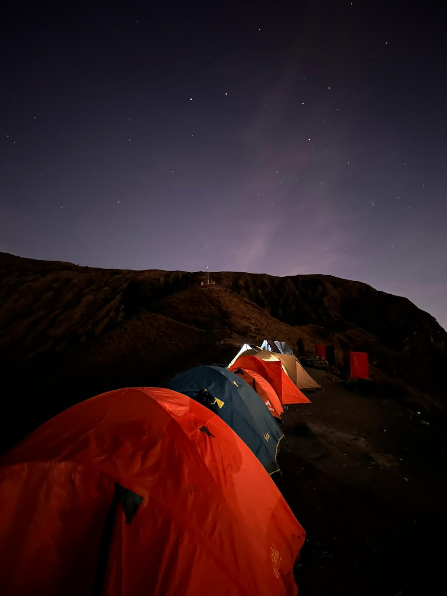
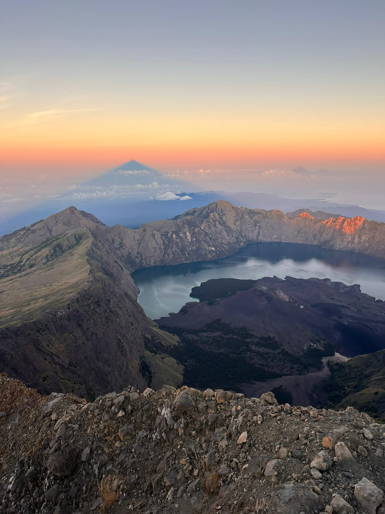
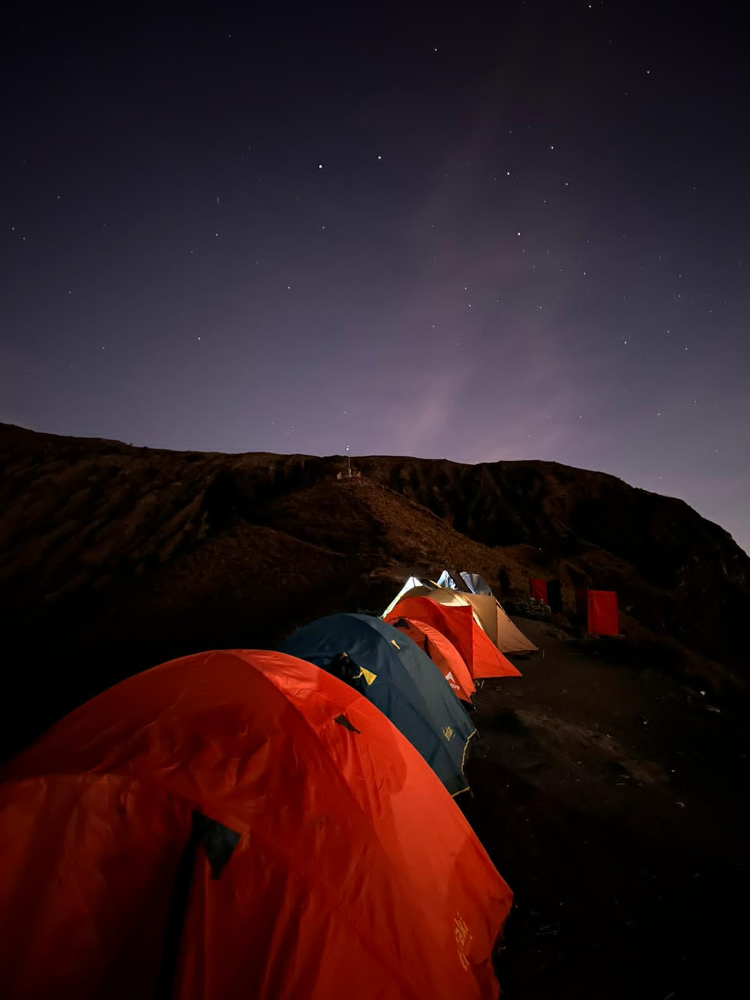

Duration: 3 Days 2 Night
Dificulty: Dificult
Sembalun trek route offers grand views of the grass savanna over the eastern entrance Spectacular Sunset views of Lake Segara Anak within the volcano’s crater Best sunrise over the summit Unique Lake of Segara Anak and hot spring water Amazing view from crater RIM Senaru over Segara Anak view ( Sunset and Sunrise ) Incredible view of grand tropical forest and Gili’s
Facilities & PricesDuration: 2 Days 1 Night
Dificulty: Moderate
2 days Summit Rinjani trekking packages appeals to those short of time, climbing by the same trails ( start and end from Sembalun village ), it provides spectacular views during the trek route starting from grand savanna, sunset and sunrise from Summit Rinjani 3.726m. Sembalun trek route offers grand views of the sand savanna over the eastern entrance Spectacular Sunset views of Lake Segara Anak within the volcano’s crater Best sunrise over the summit and an overview of the island.
Facilities & Prices
Duration: 2 Days 1 Night
Dificulty: Moderate
Crater Rim Senaru trekking program appeals to those short of time, it provides spectacular views of Lake Segara Anak within the volcanic crater. Pass grand tropical forest ( big trees and local strawberries), shadow trails Enjoy the jungle atmosphere with bird sounds, and wild animals ( black monkey, brown monkey, etc ) Spectacular view from of Gili’s, Senaru village and green tropical forest from Cemara Lima Unique Lake of Segara Anak and hotspring water Amazing view from crater RIM Senaru over Segara Anak view ( Sunset and Sunrise ).
Facilities & PricesDuration: 4 Days 3 Night
Dificulty: Moderate
Trekking summit program 4 days is the best option for family trekkers starting from the Sembalun trek route offers grand views of the sand savanna over the eastern entrance. Sembalun trek route offers grand views of the sand savanna over the eastern entrance Spectacular Sunset views of Lake Segara Anak within the volcano’s crater Best sunrise over the summit Unique Lake of Segara Anak and hot spring water Amazing view from crater RIM Senaru over Segara Anak view ( Sunset and Sunrise ) Incredible view of grand tropical forest and Gili’s.
Facilities & PricesX Trekker is a website that provides climbing tour services on Mount Rinjani. We always provide the best service, all our guide and porters are trained and very professional in carrying out their duties. We really care about customer comfort. You're happy, we're happy.
Order NowBy looking at the guide's profile, we hope that you will feel confident and comfortable in choosing a climbing guide that suite your needs and preferences. Our team of guides is ready to help you reach the top safely and with valuable experience.
Complete Profile 


